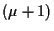
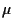
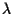

Schema-Theoreme |
Theoreme, auf deren Grundlage Erklärungsansätze für die Funktionsweise
der GA vorgeschlagen wurden. Die Sch.T. liefern untere Schranken
für die erwartete Besetzungshäufigkeit der
Schemata.
Die Nützlichkeit der Sch.T. wird
zunehmend in Frage gestellt, da sie auf unbegründeten bzw. unrealistischen
Annahmen basieren, geringen Vorhersagewert haben und keine Aussagen über die
Performance
der GA erlauben. |
Selbstadaptation |
in ES/EP (im engeren Sinne), Standardverfahren zum Erlangen
selbstadaptiven Verhaltens
in ES- und EP-Algorithmen. S. wird realisiert
durch die Evolution eines sekundären Satzes von Parametern, den
sogenannten
(endogenen)
Strategieparametern, die
gewisse statistische Eigenschaften der (Objektparameter-) Variationsoperatoren
parametrisieren (z.B.
Mutationsstärke,
i.d.R.
Standardabweichung, oder Kovarianzmatrix
des
Mutationsoperators).
Jedes Individuum enthält neben dem
Objekt- einen
eigenen Strategieparametersatz der zusammen mit dem Objektparametersatz
selektiert wird. Die Mutationsoperatoren wirken zuerst auf die
Strategieparameter, die dann ihrerseits die Mutation der Objektparameter
steuern. |
selbstadaptives Verhalten |
Eigenschaft eines EA, insb. gewisser Variationsoperatoren, ohne
äußere Kontrolle, also autonom, sich den jeweiligen Verhältnissen in der
Fitnesslandschaft
bzw. im Suchraum so anzupassen, daß der
EA gewisse,
zu definierende Performanceeigenschaften zeigt (Alternative: Fremdadaptation,
z.B.
1/5-Regel). |
Selektion/
Selektionsoperator |
notwendiger Operator im EA, der abhängig von der Fitness, bzw. der
aktuellen Zielfunktionswerte, über
die Reproduktion der Individuen entscheidet. Die Selektion
gibt der Evolution die Richtung (z.B. im Sinne einer Optimierung), sie
konserviert gute Zustände, reduziert jedoch die
Diversität
der Population,
sie ist somit Antagonist zur
Variation,
die Diversität erzeugt.
S., die die Information des besten Individuums mit Sicherheit konserviert,
wird als ,,elitäre S.`` bezeichnet.
Gängige Selektionsarten sind die Abschneideselektion (Zuchtauswahl) mit den
Varianten
``+``-
und
``,``-Selektion,
Turnierselektion,
fitness-proportionale Selektion
(realisiert als Roulett-Selektion bzw. stochastic universal sampling) und
deren transformierte Versionen mit Rangbildung
(rangbasierte Selektion)
sowie Boltzmann-Selektion.
Alle hiergenannten S. arbeiten mit ,,Zurücklegen``, d.h.
Individuen können mehrfach selektiert werden. |
Selektionsdruck |
Verhältnis der
Wahrscheinlichkeit der Auswahl des besten Individuums zur
durchschnittlichen Selektionswahrscheinlichkeit aller Individuen des
Selektionspools |
Selektionspool |
Bereich der Population, der alle Individuen enthält,
die zusammen zur Auswahl der Reproduktionspartner
(Eltern)
in Betracht gezogen werden. Bei einer
panmiktische Population
ist dies die gesamte Population, bei der Verwendung des
regionalen Populationsmodells
jeweils eine
Unterpopulation
und beim
lokalen Populationsmodell
die lokale Nachbarschaft. |
Skalierbarkeit |
(nicht immer zu erfüllende) Forderung, daß ein EA oder ein Variationsoperator
derart parametrisiert werden kann, daß er für beliebige
Problemgrößen
(Suchraumdimension)
hinreichende
Performance
zeigt |
|
|
stationärer EA |
besser, steady-state EA, EA mit gleitender Generationenfolge, es gibt keine
Nachkommenpopulation im eigentlichen Sinne, vielmehr werden Nachkommen
sukzessive generiert und die schlechtesten Individuen entfernt, so daß die
Populationsgröße konstant bleibt
(Generationslücke).
Typisches Beispiel: -ES. |
Strategieparameter |
Parameter, die das Verhalten des EA beeinflussen, bzw. den EA näher
definieren, wie z.B.
Populationsgröße,
Mutations-
und
Crossoverraten.
Man unterscheidet
exogene
und
endogene
S.
Endogene S. werden
während der Evolution adaptiert (z.B.
Mutationsstärke),
wogegen die exogenen
S. (z.B. Elternanzahl ,
Nachkommenzahl ,
Mischungszahl  ,
Lernparameter) konstant gehalten werden. Die Adaptation der endogenen S.
erfolgt durch statistische Regelverfahren (z.B.
1/5-Regel,
entstochastisierte ES),
Meta-EA
oder evolutiv durch
Selbstadaptation. ,
Lernparameter) konstant gehalten werden. Die Adaptation der endogenen S.
erfolgt durch statistische Regelverfahren (z.B.
1/5-Regel,
entstochastisierte ES),
Meta-EA
oder evolutiv durch
Selbstadaptation. |
|
|